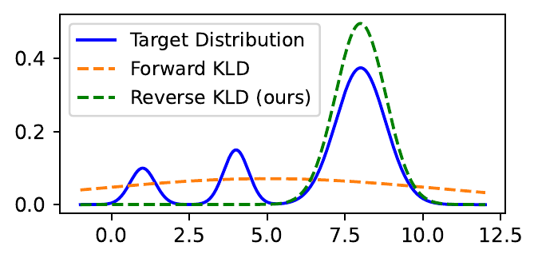
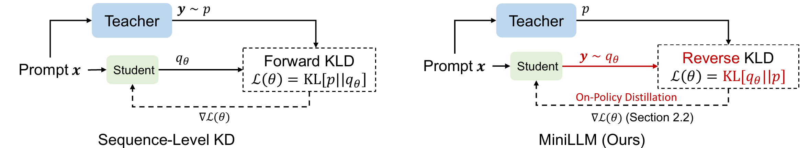
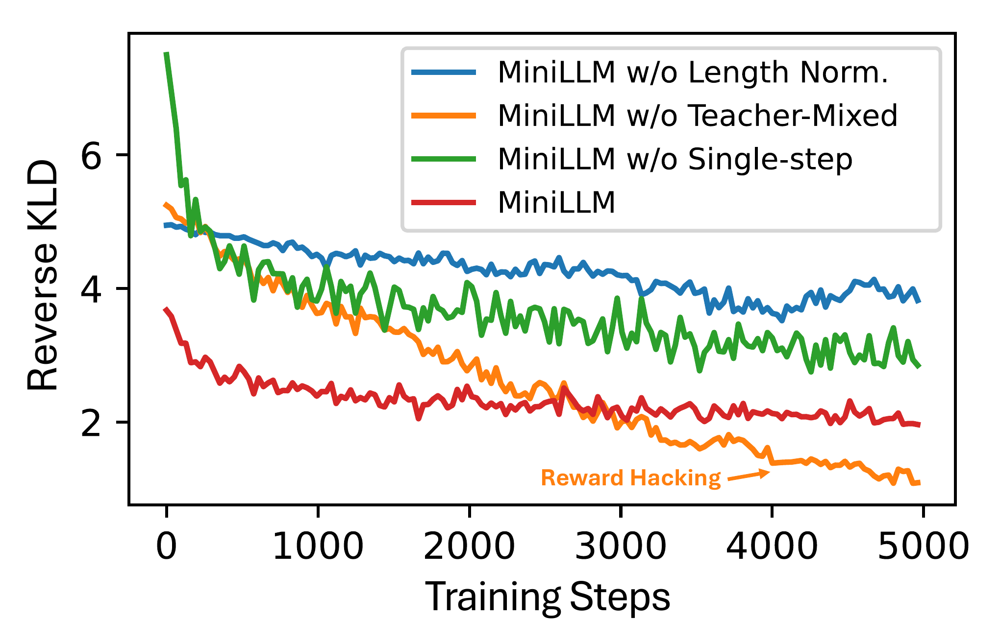
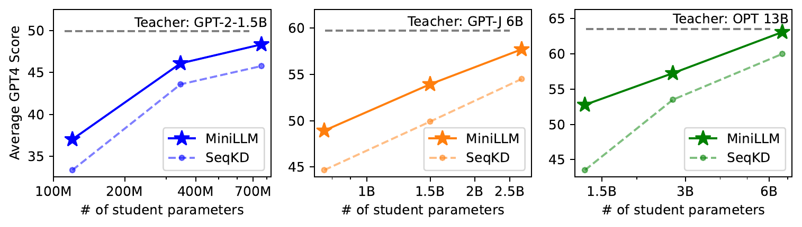
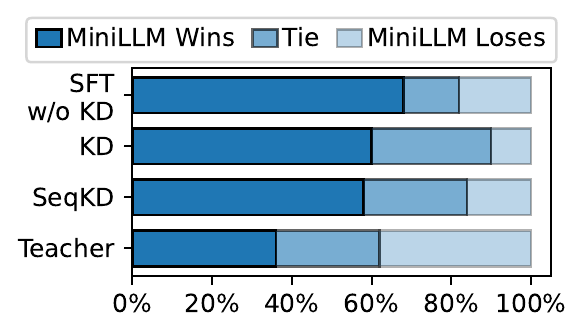
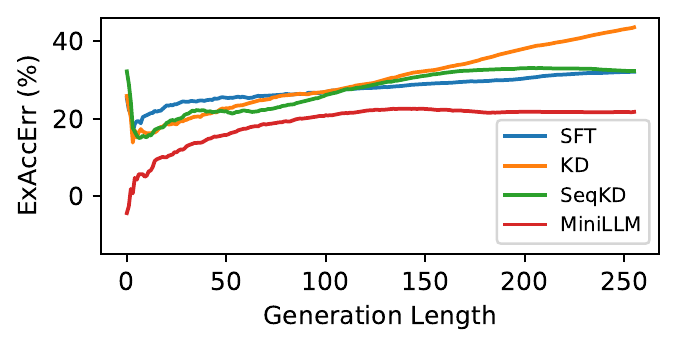
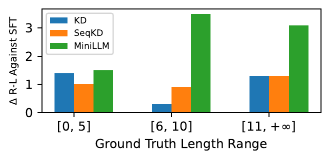
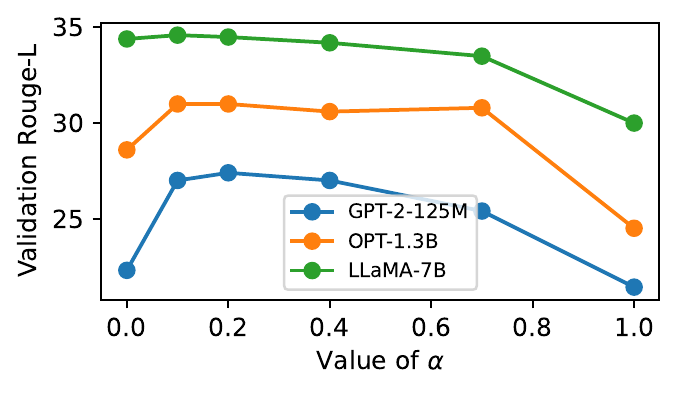

MiniLLM 把蒸馏从“模仿答案”改成“学生采样、教师纠偏”
这篇论文值得读，不是因为它又压缩了一次大模型，而是因为它把 LLM 蒸馏里的核心错配说清楚了：生成任务的教师分布多峰、学生容量有限，继续用 forward KL 逼学生覆盖所有模式，反而会鼓励低质量区域。
如果把知识蒸馏理解成“让小模型背大模型答案”，MiniLLM 的价值会被低估。它真正处理的是一个更细的分布问题：教师 LLM 在开放式生成里有许多可行回复模式，而小学生模型没有足够容量覆盖全部模式。论文的判断是，覆盖所有模式不如追到主要模式。
标准 KD、word-level KD 和 SeqKD 本质上更接近 forward KL：它奖励学生覆盖教师分布中尽可能多的区域。这个策略在分类任务里常常合理，因为输出空间小；但在指令回复、开放问答、长文本生成里，输出空间巨大，多峰结构复杂，学生若被迫“都沾一点”，就可能在教师低概率区域放出过多概率质量。
MiniLLM 的换手很明确：把目标换成 reverse KL，让学生在自己的容量内生成教师更认可的回复；再把训练改成 on-policy，让学生在训练时就面对自己生成的前缀。我的读法是：这篇论文把蒸馏问题从“数据复制”推向了“策略优化”。
这篇论文的关键不是小模型变强，而是它解释了为什么 LLM 蒸馏中的“强行覆盖”会伤害生成质量。阅读论点
MiniLLM: On-Policy Distillation of Large Language Models
读这篇论文，先抓住一个错配：分类式蒸馏不等于生成式蒸馏
论文在 Introduction 里把蒸馏分为 black-box KD 与 white-box KD。前者只能拿到教师生成文本，类似 Alpaca/Vicuna 这一路的 API 生成数据微调；后者还能访问教师输出分布或隐藏状态。MiniLLM 针对的是第二种：教师模型白盒可用，学生可以看到每一步 token 分布。
作者认为旧式白盒 KD 在 LLM 上欠探索，原因很实际：BERT 类小模型分类/理解任务的输出空间有限，而 LLM 的生成任务输出空间大、回复多样、长度不定。forward KL 要求学生覆盖教师的多种可能回复；当学生容量不足时，它会把概率放进教师的低概率空洞区域。

MiniLLM 的方法核心：反向 KL 让学生追主要模式，而不是背完教师样本
把 prompt 记为 \(x\)，回复序列记为 \(y\)。教师分布是 \(p(y\mid x)\)，学生分布是 \(q_\theta(y\mid x)\)。标准 KD 最小化的方向接近 \(\mathrm{KL}(p\|q_\theta)\)，也就是 teacher-to-student；MiniLLM 反过来最小化 \(\mathrm{KL}(q_\theta\|p)\)，也就是 student-to-teacher。方向一换，行为就变了。

为什么必须 on-policy：目标函数好看，直接优化却会高方差、奖励黑客、短答案
reverse KL 的期望在 \(y\sim q_\theta\) 下计算，这迫使训练过程看见学生自己会生成什么。论文用 Policy Gradient 推导梯度：每一步 token 的梯度被后续累积的 \(\log p/q_\theta\) 奖励加权。这让训练更贴近推理，但也带来三个工程问题。
| 训练难点 | 论文策略 | 机制解释 | 证据位置 |
|---|---|---|---|
| 高方差 | Single-Step Decomposition | 把单步 r_t 从累计 R_t 中拆出来，单步项可对整个词表求和，不只靠 Monte Carlo | Method Eq. (3), Appendix Eq. derivation, Fig. 9 消融 |
| reward hacking | Teacher-Mixed Sampling | 每步从 \(\widetilde{p}=\alpha p+(1-\alpha)q_\theta\) 采样，用教师混入减少劣质前缀；主实验 \(\alpha=0.2\) | Method Eq. (4), Appendix Fig. 14 |
| 长度偏置 | Length Normalization | 把后续累计奖励按剩余长度平均，避免模型学到空回复或过短回复 | Method Eq. (6), Table 2 消融 |
| 遗忘通用能力 | Pre-training Loss | 像 RLHF 一样额外保留预训练语料语言建模损失 | Algorithm 1, Appendix Table 5 |

主结果怎么读：MiniLLM 几乎总赢，但赢法不是同一种
实验设置是 instruction-following：用 databricks-dolly-15K 构造训练数据，过滤超长样本后约 12.5K 训练、1K 验证、0.5K 测试；评测包含 DollyEval、SelfInst、VicunaEval、S-NI 和 UnNI。指标包括 Rouge-L、GPT-4 feedback，以及 SelfInst 上的人类偏好。

| 模型家族 | 代表学生 | 最能说明问题的结果 | 应如何解读 |
|---|---|---|---|
| GPT-2 | 120M / 340M / 760M | 120M MiniLLM 在 DollyEval GPT4 为 44.7，高于 SFT 38.6、KD 40.3、SeqKD 41.2；S-NI R-L 为 25.3，高于三个基线 | 小学生模型容量最紧，mode-seeking 的收益最明显；但 teacher 本身 GPT-2-1.5B 不强，绝对质量有限 |
| OPT | 1.3B / 2.7B / 6.7B | OPT-6.7B MiniLLM 在 DollyEval GPT4 为 70.8，略高于 13B teacher 的 70.3；UnNI R-L 为 36.7，高于 teacher 36.1 | 论文把个别学生超过教师解释为 exposure bias 被 on-policy 训练缓解；这更像特定评测设置下的相对优势，不宜外推成学生全面超过教师 |
| LLaMA | 7B | LLaMA-7B MiniLLM 在 SelfInst R-L 23.2，接近 13B teacher 的 23.4；VicunaEval R-L 20.7，高于 teacher 19.4 | 强基座上收益仍存在，说明方法不是只补弱模型；但主要结论仍依赖指令跟随任务 |
Table 1 的细节比一句“全面超过 baseline”更有意思：GPT-4 feedback、Rouge-L、跨数据集泛化并不完全同向。MiniLLM 的强项更集中在开放回复与较长回复场景；对于很短的答案区间，论文在 length analysis 中承认各类 KD 差距变小。

诊断实验让论点更可信：暴露偏差、校准、长回复和多样性
论文没有只停在主表，而是用几组分析去解释为什么 on-policy reverse KL 有效果。最关键的是 exposure bias：teacher-forcing 训练在真实推理时要吃自己生成的前缀，一旦前缀偏离训练分布，误差会累积。MiniLLM 训练时采样学生回复，因此更接近推理状态。

| 诊断维度 | 论文给出的证据 | 支撑的结论 | 仍需谨慎处 |
|---|---|---|---|
| 校准 | SST2/BoolQ 上 LLaMA-7B MiniLLM 的 ECE 低于 KD 与 SeqKD；例如 SST2 ECE 0.099，KD 0.191，SeqKD 0.243 | reverse KL 可能减少学生对教师低概率区域的过度覆盖 | 只测两个分类数据集，且 teacher 校准仍最好 |
| 长回复 | S-NI 按答案长度分组，≥6 tokens 时 MiniLLM 相对 SFT 优势更明显 | 开放空间越大，mode-seeking 相对 forward KL 越有优势 | ≤5 tokens 场景差距小，训练集长句分布也带来偏移 |
| 多样性 | LLaMA 家族 Dolly/SelfInst Dist-4 与 test loss 接近 teacher/SFT；例如 Dolly Dist-4: teacher 99.3, MiniLLM 99.0 | 至少在论文度量下，MiniLLM 没有明显坍缩 | Dist-4 与 loss 不能完整代表语义多样性 |


证据账本：哪些结论强，哪些只是合理推断
| 主张 | 来源位置 | 证据强度 | 限制/ caveat |
|---|---|---|---|
| 标准 KD 在生成式 LLM 上近似 forward KL，会鼓励学生覆盖教师分布的多模式 | Introduction, Method Sec. 2 | 理论论证 + toy 图支持 | forward KL 的具体实现包括 word-level 和 sequence-level 近似，实际训练细节会影响行为 |
| reverse KL 更适合容量有限的学生，因为它追教师的主要模式 | Method Sec. 2.1, Fig. 2/Fig. 3 | 理论解释 + 方法图支持 + 实验间接支持 | mode-seeking 可能丢小模式；论文用多样性指标缓解疑虑，但未穷尽语义多样性 |
| MiniLLM 在三类模型家族与五个评测集上总体优于 SFT/KD/SeqKD | Table 1, Fig. 1 | 强，跨规模/数据集的主实验支持 | 评测集中 instruction-following 占主导，GPT-4 feedback 也依赖特定 prompt 和当时模型 |
| on-policy 训练降低 exposure bias | Analysis Sec. 4.3, Fig. 6, Appendix ExAccErr | 中强，有专门指标支持 | 主要在 GPT-2-125M + Dolly 设置展示，是否普遍到所有模型/任务仍需更多验证 |
| teacher-mixed sampling、length normalization、single-step decomposition 是必要稳定器 | Ablation Sec. 4.4, Table 2, Fig. 9, Appendix Fig. 14 | 中强，消融支持 | 消融主要围绕 GPT-2-125M；更大规模训练成本下的系统性消融有限 |
限制与开放问题：MiniLLM 说服了什么，还没说服什么
一句话收束：MiniLLM 的可读性在于它把 LLM 蒸馏的“学生容量不足”问题转译成了 KL 方向问题，再用 on-policy 训练把理论目标落到可运行算法。它不是最便宜的蒸馏路径，却给了一个非常清楚的机制判断：在开放式生成里，小模型不必覆盖教师的一切，它更应该学会稳定地产生教师认可的主要回复。